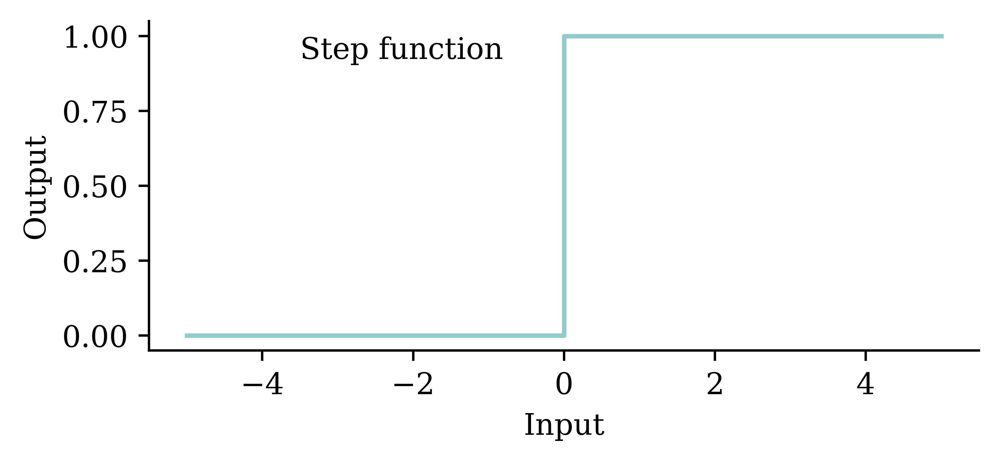
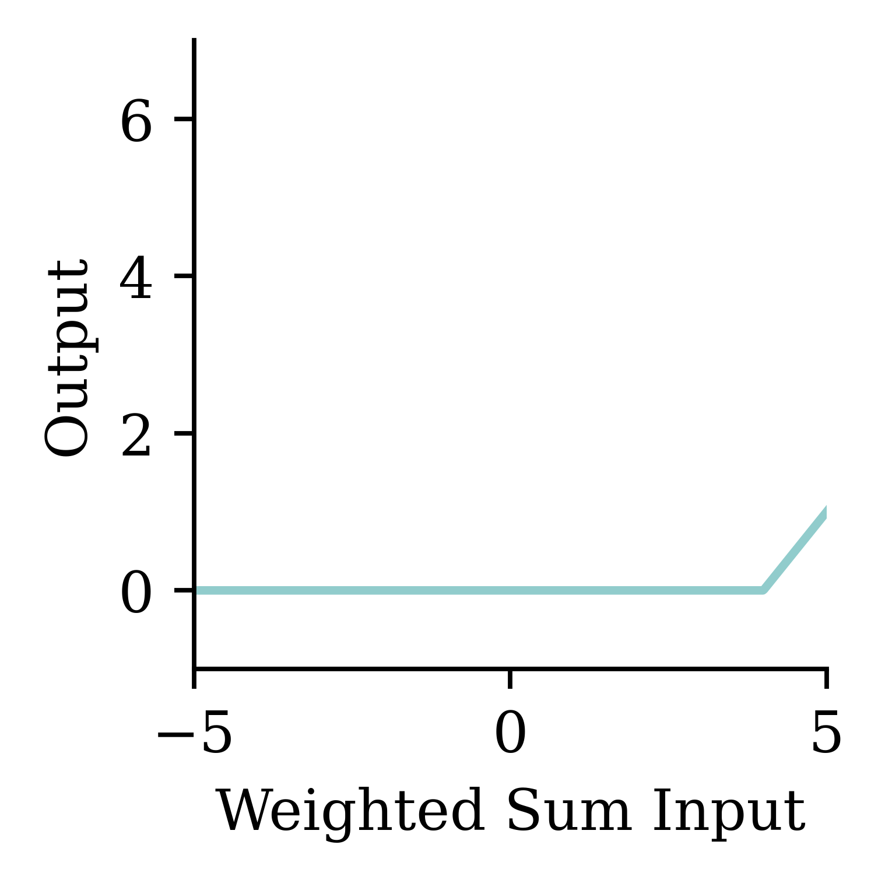
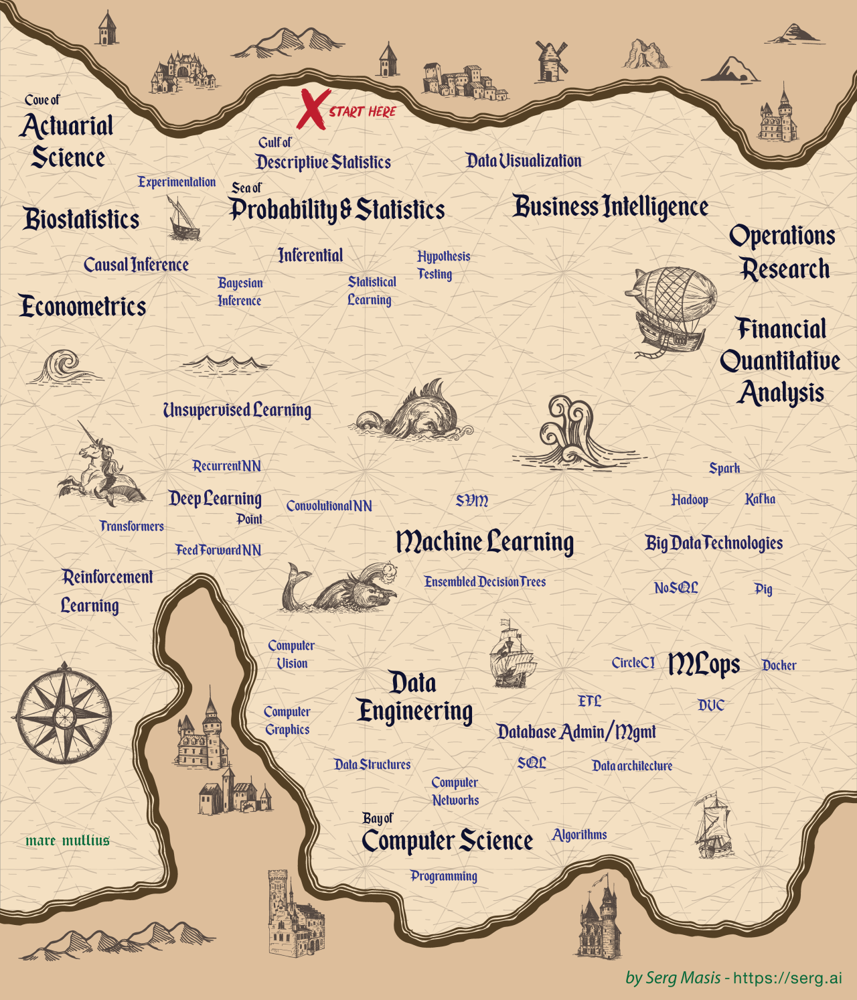

Artificial Intelligence
ACTL3143 & ACTL5111 Deep Learning for Actuaries
Artificial Intelligence
Neural Networks
How do real neurons work?
A neuron ‘firing’
Similar to a biological neuron, an artificial neuron ‘fires’ when the combined input information exceeds a certain threshold. This activation can be seen as a step function. The difference is that the artificial neuron uses mathematical rules (e.g. weighted sum) to ‘fire’ whereas ‘firing’ in the biological neurons is far more complex and dynamic.
An artificial neuron

The figure shows how we first compute the weighted sum of inputs, and then evaluate the summation using the step function. If the weighted sum is greater than the pre-set threshold, the neuron `fires’.
One neuron
\begin{aligned} z~=~&x_1 \times w_1 + \\ &x_2 \times w_2 + \\ &x_3 \times w_3 . \end{aligned}
a = \begin{cases} z & \text{if } z > 0 \\ 0 & \text{if } z \leq 0 \end{cases}
Here, x_1, x_2, x_3 is just some fixed data.
The weights w_1, w_2, w_3 should be ‘learned’.
One neuron with bias
The bias is a constant term added to the product of inputs and weights. It helps in shifting the entire activation function to either the negative or positive side. This shifting can either accelerate or delay the activation. For example, if the bias is negative, it will shift the entire curve to the right, making the activation harder. This is similar to delaying the activation.
\begin{aligned} z~=~&x_1 \times w_1 + \\ &x_2 \times w_2 + \\ &x_3 \times w_3 + b . \end{aligned}
a = \begin{cases} z & \text{if } z > 0 \\ 0 & \text{if } z \leq 0 \end{cases}
The weights w_1, w_2, w_3 and bias b should be ‘learned’.



A basic neural network

This neural network consists of an input layer with 2 neurons (x_1, x_2), an output layer with 3 neurons, and 1 hidden layer with 4 neurons. Since every neuron is linked to every other neuron, this is called a fully connected neural network. Since we have 2 inputs and 1 bias in the input layer, each neuron in the hidden layer has 2+1=3 parameters to learn. Similarly, there are 4 neurons and 1 bias in the hidden layer. Hence, each neuron in the output layer has 4+1=5 parameters to learn.
Step-function activation
Perceptrons
Brains and computers are binary, so make a perceptron with binary data. Seemed reasonable, impossible to train.
Modern neural network
Replace binary state with continuous state. Still rather slow to train.
Note
It’s a neural network made of neurons, not a “neuron network”.
Try different activation functions
Activation functions are essential for a neural network design. They provide the mathematical rule for ‘firing’ the neuron. There are many activation functions, and the choice of the activation function depends on the problem we are trying to solve. Note: If we use the ‘linear’ activation function at every neuron, then the regression learning problem becomes a simple linear regression. But if we use ‘ReLu’, ‘tanh’, or any other non-linear function, then, we can introduce non-linearity into the model so that the model can learn complex non-linear patterns in the data. There are activation functions in both the hidden layers and the output layer. The activation function in the hidden layer controls how the neural network learns complex non-linear patterns in the training data. The choice of activation function in the output layer determines the type of predictions we get.
Flexible
One can show that an MLP is a universal approximator, meaning it can model any suitably smooth function, given enough hidden units, to any desired level of accuracy (Hornik 1991). One can either make the model be “wide” or “deep”; the latter has some advantages…
Feature engineering


A major part of traditional machine learning (TML) involves conducting feature engineering to extract relevant features manually. In contrast, representational learning does not involve heavy manual feature engineering, rather, it learns relevant features automatically from data during the task. Therefore, the effort spent on feature engineering in representational learning is minimal compared to TML.
The deep learning hammer
Deep learning is not always the answer!

Quiz
In this ANN, how many of the following are there:
- features,
- targets,
- weights,
- biases, and
- parameters?
What is the depth?

There are three inputs, hence, three features. There is one neuron in the output layer, hence, one target. There are 3 \times 4 + 4 \times 4 + 4\times 1 = 32 arrows, hence, there are 32 weights in total. Since there is 1 bias for each neuron, there are 9 biases in total. The number of total parameters to learn equals to the sum of weights and biases, hence, there are 32+9=41 parameters in total.
Appendix
Package Versions
from watermark import watermark
print(watermark(python=True, packages="keras,matplotlib,numpy,pandas,seaborn,scipy,torch,tensorflow,tf_keras"))2024-04-07 22:24:44.343302: I tensorflow/core/util/port.cc:113] oneDNN custom operations are on. You may see slightly different numerical results due to floating-point round-off errors from different computation orders. To turn them off, set the environment variable `TF_ENABLE_ONEDNN_OPTS=0`.
2024-04-07 22:24:44.366851: I tensorflow/core/platform/cpu_feature_guard.cc:210] This TensorFlow binary is optimized to use available CPU instructions in performance-critical operations.
To enable the following instructions: AVX2 AVX_VNNI FMA, in other operations, rebuild TensorFlow with the appropriate compiler flags.
2024-04-07 22:24:44.797971: W tensorflow/compiler/tf2tensorrt/utils/py_utils.cc:38] TF-TRT Warning: Could not find TensorRTPython implementation: CPython
Python version : 3.11.8
IPython version : 8.23.0
keras : 3.1.1
matplotlib: 3.8.4
numpy : 1.26.4
pandas : 2.2.1
seaborn : 0.13.2
scipy : 1.11.0
torch : 2.0.1
tensorflow: 2.16.1
tf_keras : 2.16.0
Glossary
- activations, activation function
- artificial neural network
- biases (in neurons)
- classification problem
- deep network, network depth
- dense or fully-connected layer
- feed-forward neural network
- labelled/unlabelled data
- machine learning
- neural network architecture
- perceptron
- ReLU
- representation learning
- sigmoid activation function
- targets
- training/test split
- weights (in a neuron)